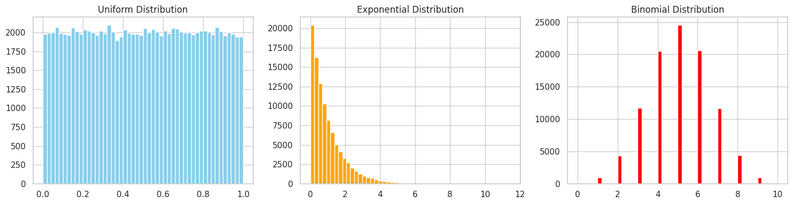
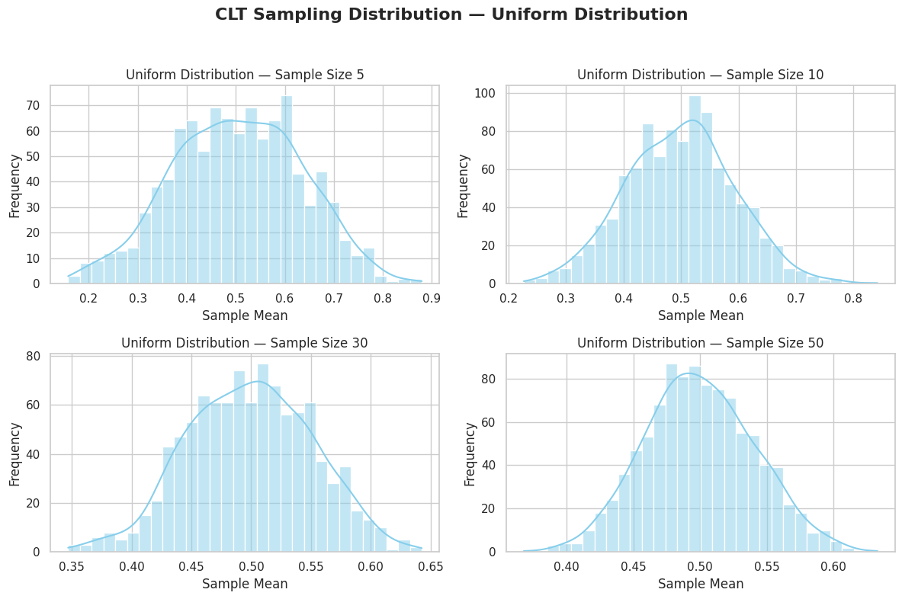
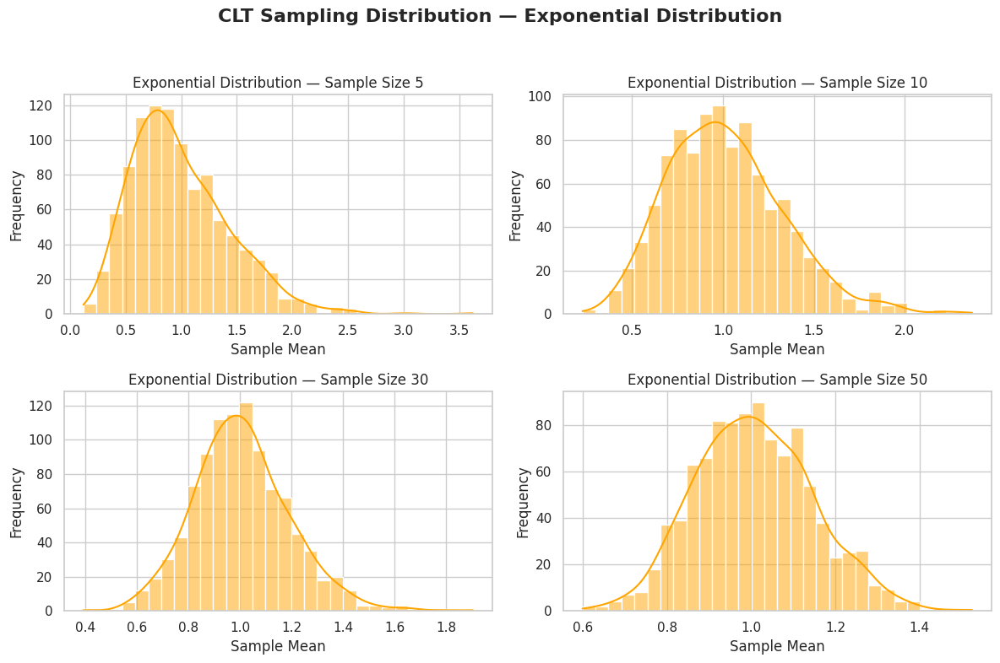
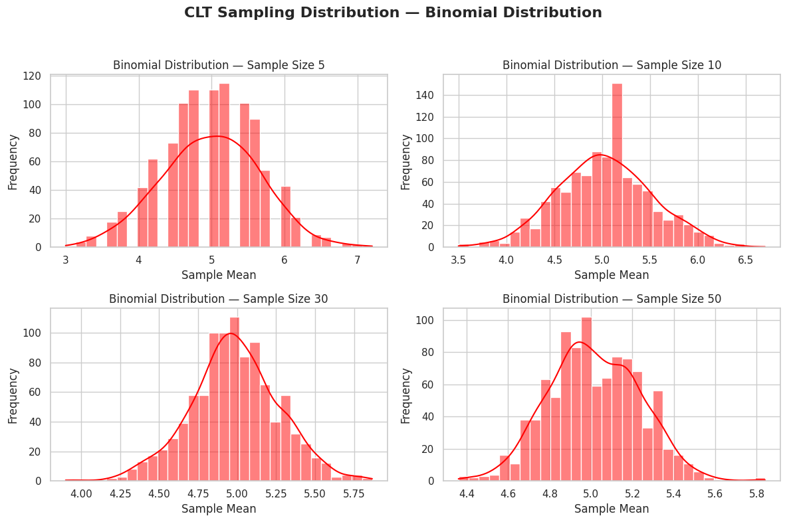
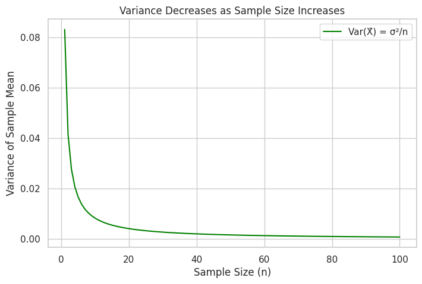

📊 Central Limit Theorem — Simulation & Visualization in Python
🎯 Objective
Demonstrate the Central Limit Theorem (CLT) through simulations on different population distributions and visualize how the distribution of the sample mean becomes normal as the sample size increases.
📖 What is the Central Limit Theorem?
The Central Limit Theorem (CLT) states: Even if a population is not normally distributed, the distribution of the sample means tends to be approximately normal if the sample size is sufficiently large.
Why is this important? - It allows us to apply normal distribution logic in hypothesis testing. - It enables confidence interval estimation. - It justifies using z-scores and t-scores even when the original data isn't normal.
📘 Formula for the standard error (spread of sample means): [ \sigma_{\bar{x}} = \frac{\sigma}{\sqrt{n}} ]
🧪 Step 1: Create and Summarize Populations
We generate three populations to simulate: - Uniform Distribution: Every value between 0 and 1 is equally likely. - Exponential Distribution: Highly right-skewed, models waiting times. - Binomial Distribution: Discrete 0 or 1 (like success/failure), here with 10 trials and 0.5 probability.
np.random.seed(42)
N = 100_000
uniform_pop = np.random.uniform(0, 1, N)
exponential_pop = np.random.exponential(scale=1.0, size=N)
binomial_pop = np.random.binomial(n=10, p=0.5, size=N)
# Print summary
print("\U0001F4CA Population Summary:")
for name, pop in zip(["Uniform", "Exponential", "Binomial"], [uniform_pop, exponential_pop, binomial_pop]):
print(f"\n→ {name} Distribution:")
print(f" Mean : {np.mean(pop):.3f}")
print(f" Variance : {np.var(pop):.3f}")
# Plot histograms of populations
plt.figure(figsize=(15, 4))
for i, (title, data, color) in enumerate(zip(
["Uniform", "Exponential", "Binomial"],
[uniform_pop, exponential_pop, binomial_pop],
['skyblue', 'orange', 'red']
)):
plt.subplot(1, 3, i+1)
plt.hist(data, bins=50, color=color)
plt.title(f"{title} Distribution")
plt.tight_layout()
plt.show()
📊 Population Summary:
→ Uniform Distribution: Mean : 0.499 Variance : 0.083
→ Exponential Distribution: Mean : 1.005 Variance : 1.008
→ Binomial Distribution: Mean : 5.004 Variance : 2.504

📈 Step 2: Sampling and Distribution of Sample Means
This function: - Takes multiple samples from a population - Computes the sample means - Plots the histogram of the means
def plot_sampling_distribution(population, dist_name, color):
sample_sizes = [5, 10, 30, 50]
num_samples = 1000
plt.figure(figsize=(12, 8))
for i, n in enumerate(sample_sizes):
sample_means = [
np.mean(np.random.choice(population, size=n, replace=False))
for _ in range(num_samples)
]
plt.subplot(2, 2, i+1)
sns.histplot(sample_means, kde=True, bins=30, color=color)
plt.title(f"{dist_name} — Sample Size {n}", fontsize=12)
plt.xlabel("Sample Mean")
plt.ylabel("Frequency")
plt.suptitle(f"CLT Sampling Distribution — {dist_name}", fontsize=16, weight="bold")
plt.tight_layout(rect=[0, 0, 1, 0.95])
plt.show()
🔬 Step 3: Simulation Results by Distribution
▶️ Uniform Distribution
plot_sampling_distribution(uniform_pop, "Uniform Distribution", color="skyblue")

📘 Uniform Distribution: All values between 0 and 1 are equally likely. The population is flat.
🧠 Observation: Despite the flat shape of the population, the sampling distribution becomes bell-shaped as the sample size increases.
▶️ Exponential Distribution
plot_sampling_distribution(exponential_pop, "Exponential Distribution", color="orange")

📘 Exponential Distribution: Right-skewed, often used to model time between rare events.
🧠 Observation: Initially skewed, but the sampling mean distribution becomes symmetric and normal-looking with larger samples.
▶️ Binomial Distribution
plot_sampling_distribution(binomial_pop, "Binomial Distribution", color="red")

📘 Binomial Distribution: Discrete distribution, modeling the number of successes in a series of Bernoulli trials.
🧠 Observation: Even a discrete distribution like binomial approaches a normal distribution in its sample means.
📉 Step 4: Variance of the Sample Mean vs Sample Size
The variance of the sample mean decreases as sample size increases:
sizes = np.arange(1, 101)
uniform_var = np.var(uniform_pop)
variances = [uniform_var / n for n in sizes]
plt.figure(figsize=(8,5))
plt.plot(sizes, variances, label='Var(X̄) = σ²/n', color='green')
plt.xlabel('Sample Size (n)')
plt.ylabel('Variance of Sample Mean')
plt.title('Variance Decreases as Sample Size Increases')
plt.legend()
plt.grid(True)
plt.show()

📘 Key Formula: [ \text{Var}(\bar{X}) = \frac{\sigma^2}{n} ]
As sample size increases, the spread of the sample mean distribution shrinks, making estimates more precise.
💼 Real-World Applications of CLT
| Application | Description |
|---|---|
| Polling | Estimate election results from survey samples. |
| Quality Control | Monitor product consistency in factories. |
| Finance | Predict average portfolio returns. |
| Medicine | Evaluate treatment effectiveness across sample groups. |
| Tech A/B Testing | Assess conversion rates between web design variations. |
✅ Conclusion
- CLT is powerful because it works with any distribution.
- Larger sample sizes make the sampling distribution more normal.
- This is why normal distribution is so common in real data.
🧠 Key Takeaways
- CLT justifies statistical inference in real life.
- Sample size plays a critical role in normality of sample means.
- Visualization helps understand abstract statistical laws.